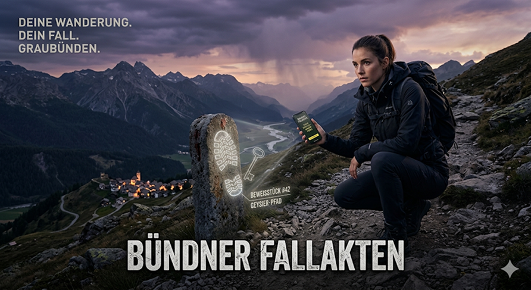
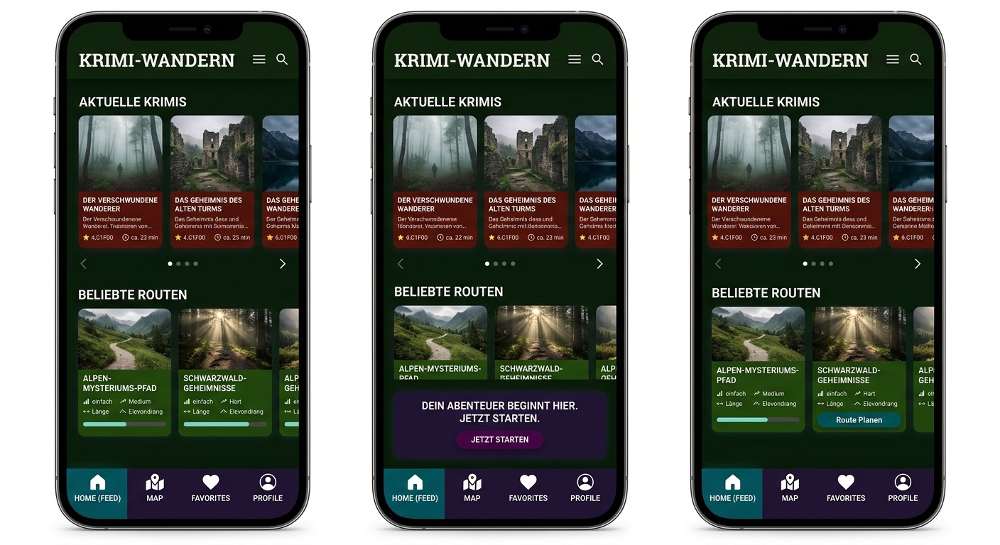

Lade die Bündner Fallakten herunter
Bist du bereit, deine Wanderschuhe zu schnüren und zum Detektiv zu werden? Lade die App kostenfrei herunter, schnapp dir dein Team (oder ermittle solo) und wähle deinen Fall vor Ort in Graubünden aus.

Die „Bündner Fallakten“ verwandeln die malerischen Wanderwege Graubündens in eine packende Kriminal-Kulisse. Deine Wandergruppe begibt sich mit dem Smartphone auf eine echte Spurensuche.
Ausgerüstet mit modernster GPS-Technologie navigiert ihr durch dichte Tannenwälder und felsige Schluchten, um mysteriöse Vorfälle zu rekonstruieren, Beweise zu sammeln und den Täter dingfest zu machen.
Geofenced Checkpoints aktivieren Spuren und Audio-Dossiers automatisch, sobald du dich der Zielkoordinate näherst.
Atmosphärische Thriller-Szenen, eingesprochen von Profi-Sprechern, ziehen dich akustisch mitten in das Geschehen hinein.
Knacke Zahlencodes, analysiere Alibis und löse anspruchsvolle Logikrätsel direkt auf der digitalen Ermittlerkonsole.
Projiziere virtuelle Tatort-Gegenstände, Spuren oder Verdächtigen-Hologramme direkt in die reale Waldumgebung.
Die verschlüsselte Frequenz sperrt den Zugriff auf den ersten Audio-Teaser. Um den Kanal freizuschalten, musst du das Beweisstück (Evidence Item) identifizieren.
"Der Geysier-Pfad birgt den Code. Analysiere das Gipfelfoto oben im Dossier (Hero-Bild) und gib die Nummer des Beweismittels ein."
Bist du bereit, deine Wanderschuhe zu schnüren und zum Detektiv zu werden? Lade die App kostenfrei herunter, schnapp dir dein Team (oder ermittle solo) und wähle deinen Fall vor Ort in Graubünden aus.
